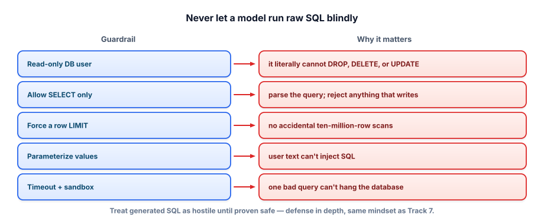

Generating safe, correct SQL
You are about to let a language model write queries that run against your database. That sentence should make you nervous — and this lesson turns that nervousness into layered, boring, reliable safety.
Why you never trust generated SQL
A model can be prompt-injected (Track 7): a malicious value in the data, or a cleverly worded question, can steer it into producing DROP TABLE customers; or DELETE FROM orders;. Even without an attacker, a well-meaning model can write a query that scans a billion rows and takes your database down, or one that exposes data the user shouldn’t see.
The rule is simple and absolute: never rely on the prompt for safety. “Please only write SELECT statements” is a request, not a guarantee — and a request is not a security control. Safety has to live in the system around the model, in layers, so that if one fails the others still hold.

The layers, strongest first
1 · A read-only database user (your bedrock). Connect using credentials that only have SELECT permission. Now it is physically impossible for any generated query to modify or delete data — the database itself refuses. This is the one control an attacker cannot prompt their way around, so it’s non-negotiable. Everything else is a helpful addition on top.
2 · Validate that it’s a single read. Before running, check the query is one statement and starts with SELECT (or WITH), and reject stacked statements (a semicolon followed by more SQL). This catches obvious writes early and gives a clean error instead of a database rejection.
3 · Force a row limit. Wrap or inject a LIMIT so even a query over a huge table returns bounded results — protecting both latency and memory.
4 · Parameterize any user-supplied values so raw user text is never concatenated into SQL, and 5 · set a timeout so a pathological query is cancelled rather than hanging the connection.
import sqlite3
def validate(sql):
q = sql.strip().rstrip(";").strip()
if ";" in q: # block stacked statements
raise ValueError("only a single statement is allowed")
if not q.lower().startswith(("select", "with")): # reads only
raise ValueError("only SELECT queries are allowed")
return q
def run_readonly(sql, db_path):
q = validate(sql)
# open the DB in read-only mode — a second, hard guarantee
con = sqlite3.connect(f"file:{db_path}?mode=ro", uri=True)
try:
rows = con.execute(q + " LIMIT 1000").fetchall() # bound the result
finally:
con.close()
return rowsNote the belt and braces: validate rejects non-reads, and mode=ro makes the connection itself read-only so even a write that slipped past validation would fail at the database. That redundancy is the whole idea of defense in depth — you assume each layer is imperfect.
Putting your safety in the prompt (“do not write destructive queries”) and then executing whatever comes back with a normal read-write connection. One prompt injection and your data is gone. The prompt is a hint; the permissions are the wall.
- Never trust generated SQL — and never make the prompt your only defense.
- The bedrock control is a read-only database user: writes become physically impossible.
- Add layers: validate SELECT-only & single-statement, force a LIMIT, parameterize values, set a timeout.
- Defense in depth: assume any one layer can fail, so keep several (e.g. validation and a read-only connection).
- This is Track 7’s security mindset applied to databases.
A teammate’s text-to-SQL endpoint runs the model’s output directly with a normal (read-write) connection, relying on a prompt line: “only generate SELECT statements.” List the concrete changes you’d make, in priority order, and say which single change matters most and why.
▸ Show solution & reasoning
Priority order: (1) switch to a read-only database user — this alone makes destructive queries impossible regardless of what the model emits. (2) Add code validation that the query is a single SELECT/WITH, rejecting semicolon-stacked statements. (3) Enforce a LIMIT and a statement timeout to bound cost and stop runaway scans. (4) Parameterize any user-supplied literals rather than concatenating them. (5) Keep the prompt instruction too — it reduces bad generations — but treat it as a hint, not a control.
Which matters most: the read-only user. Every other layer reduces the chance of a bad query; the read-only permission removes the possibility of a damaging one. Security controls that make an attack impossible beat controls that make it merely less likely — and it’s the one thing a prompt injection can’t argue with. Notice this is straight least-privilege thinking: give the component exactly the access it needs (read) and nothing more.
Which control most reliably prevents a prompt-injected text-to-SQL system from deleting data?
Why check the parsed statement type instead of scanning for the word 'delete'?
We’ve focused on security safety — no deletes, no injection, no runaway scans. But there’s a quieter safety that matters just as much in analytics: not returning a confident wrong answer. A query that silently double-counts through a fan-out join, or misses rows because of a null in the join key, is a different kind of unsafe — it corrupts decisions instead of data. Some of the same discipline helps here: constrain the surface (curated views with the joins baked in), and validate the shape of results (did we expect one row and get thousands?).
The deeper move is to make the system show its work. Returning the generated SQL alongside the answer — and, in a good UI, the row count and a sample — lets a user sanity-check the “how” behind the number, turning a black box into something auditable. This dovetails with grounding and citations from RAG: just as a RAG answer should point to its sources, a text-to-SQL answer should point to the query that produced it. Transparency doesn’t make the SQL correct, but it makes wrongness visible, which is the next best thing — and it’s exactly what earns trust from the analysts whose bottleneck you’re trying to remove.
Safety in place, we can let the system actually run queries — and, crucially, recover when they fail. Next: the self-correcting SQL agent.